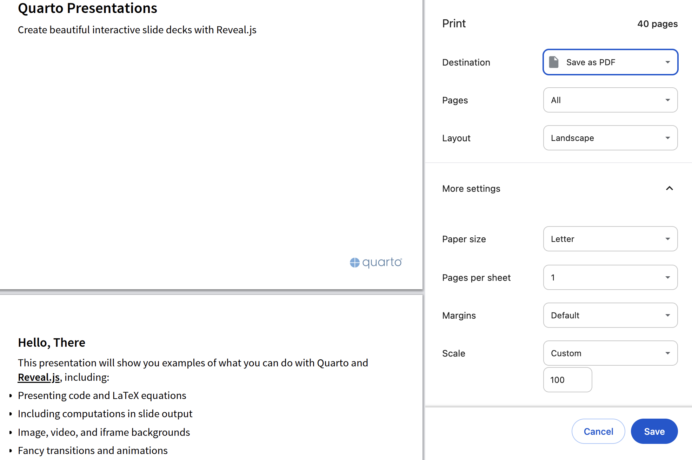
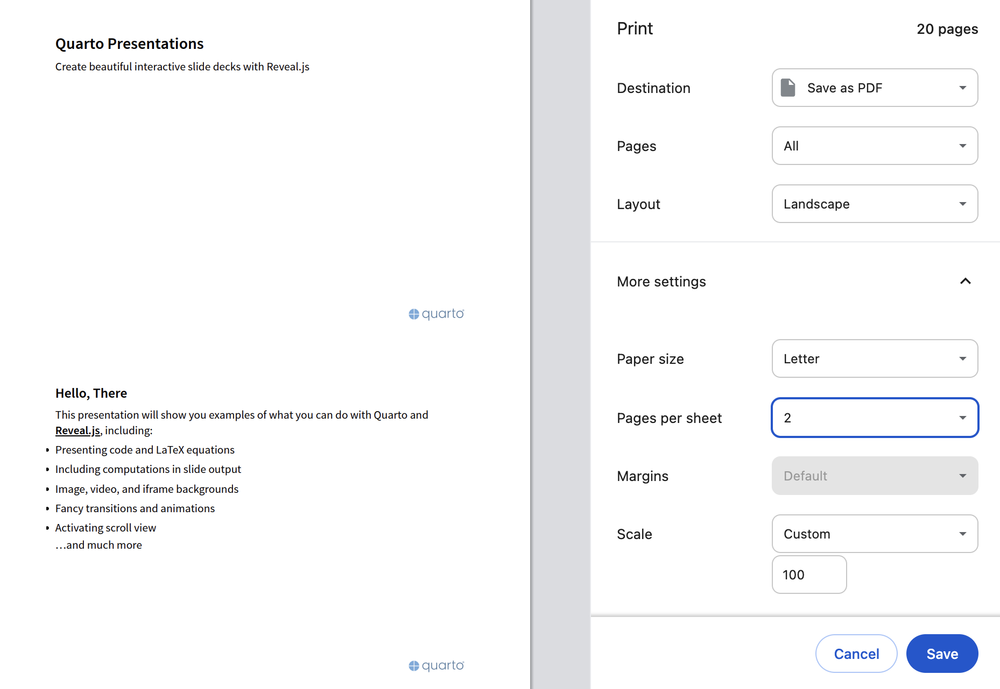

With Quarto, you can turn Quarto markdown (qmd) files into documents like articles or reports, websites such as blogs, and different kinds of presentations including sales pitches.
Like other digital deliverables created by Quarto, presentations can be rendered as HTML, viewed in a web browser, and saved as a PDF using the print dialog.
Before saving, we should make sure the Layout is set to Landscape.

A PDF presentation should have only one slide per page, but putting multiple slides on one page may be convenient if we want to read the slides instead of presenting them.

For best results, I suggest following the PDF export instructions in the RevealJS documentation: https://revealjs.com/pdf-export/.
PDF files are ubiquitous and it is good to know that you can generate one with nothing more than a web browser whenever necessary, but HTML files can do many things that PDF files simply cannot.
The HTML presentation below demonstrates all of the features described in its slides, many of which are not active in the PDF presentation beneath it.
Instead of embedding your presentation in a webpage as shown above, you can view it in its own browser tab in HTML or PDF format.
To edit a presentation, you can modify the plain text of the associated qmd file in a text editor or work with a WYSIWYG version via the Visual Mode in RStudio, VSCode, or Positron.
This repo is set up to use the quarto-revealjs-editable extension by Emil Hvitfeldt which provides an editing experience that is similar to PowerPoint or Google Slides.
After following the instructions below, try previewing the slides by clicking “Render” in RStudio or Posit Cloud, or by running quarto preview in the terminal, and then try adding, moving, resizing, and rotating text, arrows, and images as described the documentation of the extension.
Presentation and tutorial setup instructions
0. Go to the repo I prepared: https://github.com/maptv/USERNAME.github.io
1. Copy “USERNAME.github.io”
2. Click “Use this template” and then “Create new repository”
3. Paste “USERNAME.github.io” in as the repository name
4. Copy your GitHub username and paste it in place of “USERNAME” in “USERNAME.github.io”
5. Click “Create repository”
6. Copy the web address (url)
7. Go to https://posit.cloud
8. Click “New Project” and then “New Project from Git Repository”
9. Paste the repo url you copied in Step 3 and click “OK”
10. In the Files tab of the bottom right pane, select git.R
11. Edit the user.name and user.email values in git.R and click the diskette icon to save
12. When you see a yellow banner above git.R, click “Install” and wait for installation to complete in the background
13. Click “Source” in the upper right corner of the upper left pane (the one that is displaying git.R)
14. If you already have a Personal Access Token (PAT), close the new browser tab that opened. Otherwise, enter a note, click “Generate Token”, and click the copy button.
Updating
15. Make at least one change to at least one file, such as the edits to git.R above
16. Click the “Git” tab in the top right pane of Posit Cloud
17. Click the check box next to the file you changed
18. Click “Commit” to open a popup window (modal)
19. Enter a commit message in the upper right corner of the modal and click “Commit”
20. Close all modals and click the green up arrow labeled “Push” to push your commit to GitHub
Publishing
21. Push at least one commit to your repo using the instructions above so that the credentials manager has your username and PAT
22. Copy the command below, paste it into the terminal tab in the lower left pane, and press Enter or Return
quarto publish gh-pages